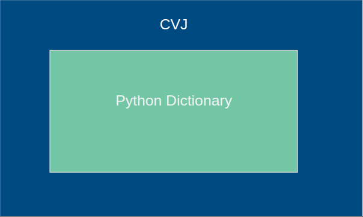

Create an Extension¶
Welcome to learning how to extend this library. The whole point of this library is to congregate code that everyone can benefit from when dealing with COCO formatted JSON files. So knowing how this structure works is an important thing to know.
How CVJSON Objects Are Structured¶
Below shows how the CVJ class wraps around a python dictionary. It has all of the same functions as a dictionary because they are coming from an actual dictionary.
{kind=link}
{kind=link}
When to Create an Extension¶
You should create a subclass/extension of CVJ if the methods that you are making are very different from the capabilities that a current extension should be able to do. Lets say you need to start running detections and want to maintain your code and allow others to use it easily also. You would then create an extension/subclass called Detector since the functionality is very different from the other extensions/subclasses. Where you would start is by making sure all of the CVJ objects attributes are passed to the new extension/subclass when the user instantiates your Detector object.
from cvjson.cvj import CVJ
class Detector(CVJ):
"""
The Detector class takes the CVJ object and makes it more
than it was by adding functionality to it and trains object
detection algorithms.
"""
def __init__(self, cvj):
super().__init__()
#### Super Class Vars Start
self._json_path = cvj._json_path
self._json_data = cvj._json_data
self._image_folder_path = cvj._image_folder_path
self._image_class_counts_path = cvj._image_class_counts_path
self._class_to_filepath_data = cvj._class_to_filepath_data
self._image_id_2_anns_dict = cvj._image_id_2_anns_dict
self._class_id_2_name_dict = cvj._class_id_2_name_dict
self._class_name_2_id_dict = cvj._class_name_2_id_dict
self._img_id_2_filename_dict = cvj._img_id_2_filename_dict
self._filename_2_image_id_dict = cvj._filename_2_image_id_dict
self._imageid_to_filepath_dict = cvj._imageid_to_filepath_dict
self._image_id_2_image_attribs = cvj._image_id_2_image_attribs
self._class_id_2_anns_dict = cvj._class_id_2_anns_dict
### Super Class Vars End
In the example above where the comments “Super Class Vars..” are, that should be copied and pasted in to your new extension/subclass. The user shouldn’t have to continue putting in the json path or the image folder path everytime they downcast to a new subclass, so transferring that knowledge between classes is best. Also they may have already loaded some data that is quite large and your new extension shouldn’t make them load that data again. Thats why we reference the data from the super class and we do it to all of the stored dictionaries to increase runtime performance.
Adding methods to the new extension/subclass¶
When you write the new methods that you want to introduce, you should make clearly named variables or at least comment on what they mean above them.
If you must have short variables, please use the following as an example of how to do it.
from cvjson.cvj import CVJ
class Detector(CVJ):
"""
The Detector class takes the CVJ object and makes it more
than it was by adding functionality to it and trains object
detection algorithms.
"""
def __init__(self, cvj):
super().__init__()
#### Super Class Vars Start
self._json_path = cvj._json_path
self._json_data = cvj._json_data
self._image_folder_path = cvj._image_folder_path
self._image_class_counts_path = cvj._image_class_counts_path
self._class_to_filepath_data = cvj._class_to_filepath_data
self._image_id_2_anns_dict = cvj._image_id_2_anns_dict
self._class_id_2_name_dict = cvj._class_id_2_name_dict
self._class_name_2_id_dict = cvj._class_name_2_id_dict
self._img_id_2_filename_dict = cvj._img_id_2_filename_dict
self._filename_2_image_id_dict = cvj._filename_2_image_id_dict
self._imageid_to_filepath_dict = cvj._imageid_to_filepath_dict
self._image_id_2_image_attribs = cvj._image_id_2_image_attribs
self._class_id_2_anns_dict = cvj._class_id_2_anns_dict
### Super Class Vars End
def detect_something(self, gamma=0,
For this new class called Detector, it probably would be useful to abstract the method calls some. A good design would probably be where they only have to call one or two methods to do the majority of the tasks. This means that for more convenience they lose comprehensiveness. Convenience is the goal of this library, so for the common use-case one or two methods should do the bulk of the work.
An example of what I mean by abstracting the methods would be similar to how the user would use the code below.
from cvjson.cvj import CVJ
from cvjson.extensions.detector import Detector
json_path = "path/to/your/json"
image_path = "path/to/your/images"
# co = CVJ Object
co = CVJ(json_path)
detector = Detector(co)
# Abstracted method.
detector.detect_object(images=image_path, object_type=detector.SMALL_CAR)
detector.detect_object(images=image_path, object_type=detector.BOATS)
The user only sees that the method that is used is to detect different types of objects. They don’t see how it is implemented and they only have to use one method for most of the detections they want.
When to Add Your Method to an Existing Extension¶
When adding functionality to an existing extension just write the method like normal and then write a unit test for it. Then add documentation to the new method using the numpydoc format.